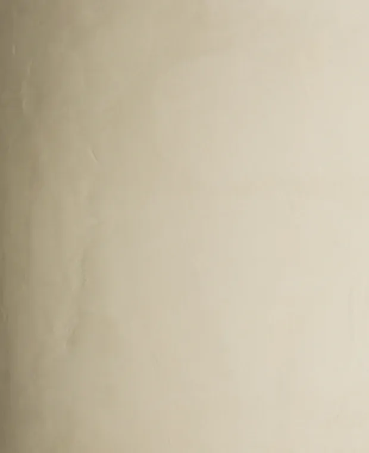
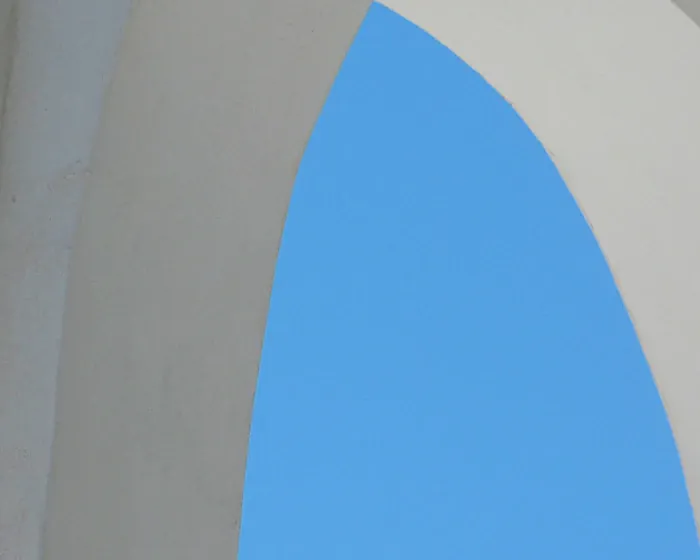
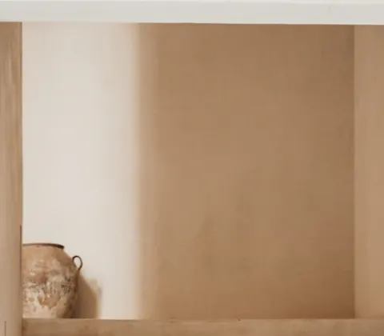
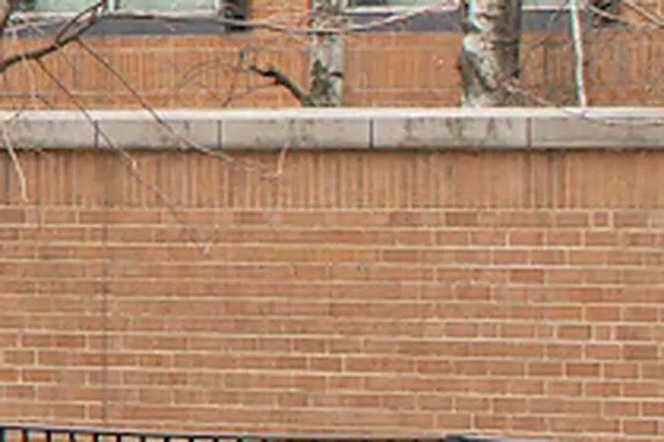

Walk the site.
We go before we draw. We pace the plot, find the tree, stand where the kitchen window will be at seven in the morning. The first drawing is a sheet of notes: slope, neighbours, wind, the line where the sun stops.
Site, contours, 1:200Ida Thorsen and Mats Lindqvist started Linea in 2014 with two desks and a borrowed plan chest. The table is longer now. The rule is the same: everyone who draws a building visits the site.
We go before we draw. We pace the plot, find the tree, stand where the kitchen window will be at seven in the morning. The first drawing is a sheet of notes: slope, neighbours, wind, the line where the sun stops.
Site, contours, 1:200Before there is a wall there is an arc of sun over the plot and a short list of hours we want to keep: morning in the kitchen, late light on the long table. The windows are placed to catch them.
Sun path, 55.7° NBrick and lime, drawn thick. We start at 480 millimetres and subtract. The walls are where the budget goes, so they get drawn before anything that covers them.
Load-bearing brick, lime-plasteredFurniture goes in at 1:20, together with the walls. If the table has no place, the room is not finished, however good the walls are.
Table, counter, stairAt 1:5 we draw every place where two materials meet, until the builder can read it without us. Sixty to eighty details a house. Most are never noticed, which is the point.
Detail 05, jamb in planThe board has not changed much in ten years. New things are tested on it for a season before they reach a drawing. Each chip is a colour we have matched by eye in daylight, not on a screen.

Lime plaster, three coats. Floated by hand; the surface keeps the last gesture of the trowel. Warm sand, never white.

Hydraulic lime render. For vaults and facades. Never painted, so it greys at the speed of the park path beside it.

Oak, air-dried. Boards of 22 mm, treads of 38. Oiled with linseed and beeswax, never lacquered; it is allowed to mark.

Brick, hand-moulded. 228 × 108 × 54 from a yard in south Zealand. We pick the pallet by walking the yard with a mason.
Eight new commissions a year, so that each one is drawn by the same hands that will stand on the site.